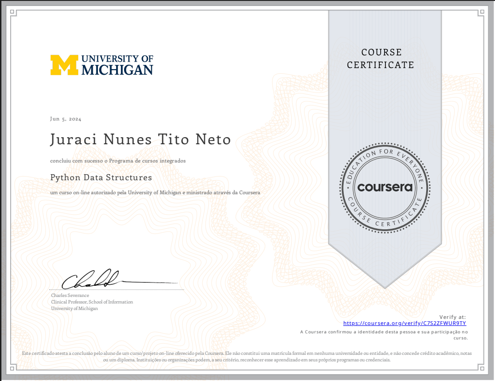
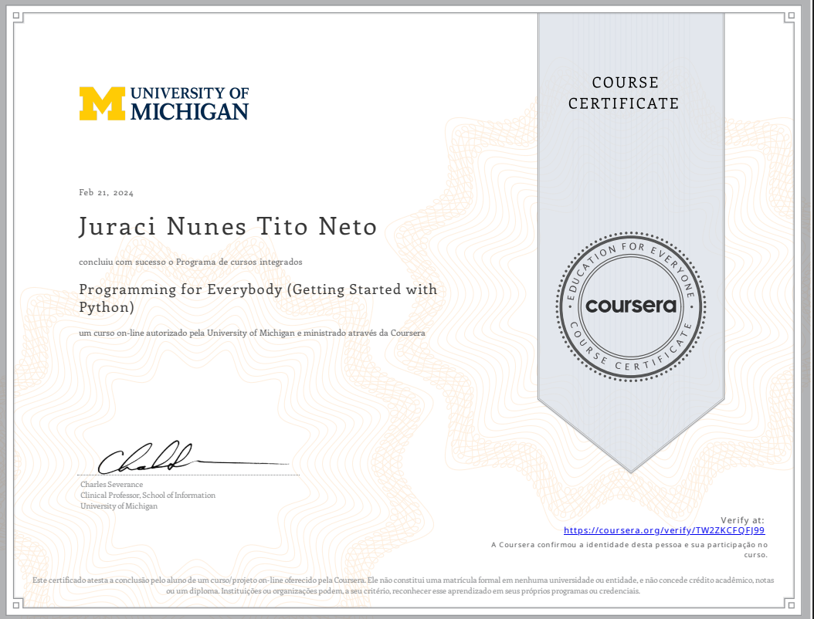

python fullstack
Estudo aplicado
Estudo de PYTHON | Um pouco de tudo em uma maratona de 100 exercícios
Minha Jornada com Python: Da Lógica à Construção de Soluções
Minha trajetória com Python começou com a base sólida e didática do Curso em Vídeo, com Gustavo Guanabara, onde dei meus primeiros passos na sintaxe e entendi o potencial da linguagem. Buscando uma visão mais acadêmica e global, especializei-me em dois módulos do programa Python for Everybody, da University of Michigan (Coursera), o que me deu uma compreensão profunda sobre estruturas de dados e como a linguagem interage com a web.
* Atualmente, estou imerso em uma maratona de 100 exercícios práticos no Jupyter, onde aplico Python em diversas frentes:
Lógica Pura e Algoritmos: Construção de programas complexos como simuladores de caixa eletrônico e geradores de senhas seguros.
Análise de Dados: Manipulação e interpretação de informações para tomada de decisão.
Desenvolvimento de APIs: Conectando sistemas e explorando a versatilidade do Python no backend.
NÍVELINICIANTE
CLASSEGERREIRO
TOOLSJUPYTER / VSCODE / SPYDER
CERTICIFADOS
Tornar ainda mais importante o papel dos treillers para os usuários: ajudá-los a encontrar bons filmes e compartilhar suas preferencias com amigos e conhecidos. Ajudando, por fim, os usuários a descobrirem onde assistir os seus filmes favoritos, no cinema ou em plataformas de streaming. A meta era criar o "Claquette": um app de trailers onde o usuário poderia ver transformada a exepriência de assistir treillers.

University of Michigan · Curso: Python Data Structeres.

University of Michigan · Curso: Programming for Everybody (Getting Started with Python).
Inciando o desafio dos 100 algoritmos
* POR QUE INICIEI ESTE COMBATE COM O PYTHON?
1. Construção de Raciocínio Algorítmico
Ao desenvolver projetos como um caixa eletrônico, o objetivo não é apenas subtrair valores, mas gerenciar estados complexos: a contagem de cédulas, a validação de saldo e a repetição de fluxos. Isso treina sua mente para prever erros de lógica antes mesmo de escrever o código.
2. Versatilidade Tecnológica
O desafio abrange áreas distintas para provar que o Python é uma "hidra" e eu posso dominá-la:
- Segurança: Com o gerador de senhas, você estuda aleatoriedade e manipulação de strings.
- Conectividade: Com as APIs, você aprende como o Python "conversa" com o resto do mundo digital.
- Inteligência: Com a análise de dados, você prepara o terreno para transformar números brutos em insights valiosos.
3. Autonomia e "Mão na Massa"
Diferente dos cursos teóricos, a maratona de exercícios serve para tirar as "rodinhas da bicicleta". O objetivo é que você saia da posição de aluno que apenas segue tutorias para a posição de desenvolvedor que projeta soluções.
4. Preparação para o Mercado (Portfolio-Ready)
Cada um desses 100 exercícios é um componente que demonstra sua capacidade técnica. Ter um repositório com essa quantidade de problemas resolvidos mostra para recrutadores (como os da Siemens ou outras empresas de tech) que você tem consistência, resiliência e domínio prático da linguagem mais requisitada do mercado atual.
E A BATALHA CONTINUA...
PROJETOS COMPLETO
Loja de aluguel de carros
- 100% DE APROVAÇÃO: Usuários validaram a navegação via scroll vertical.
- ACESSIBILIDADE: Design refinado para visão subnormal e fadiga cognitiva.
- ARQUITETURA ÉTICA: Livre de dark patterns; informações sempre claras.

Diagrama de Afinidade e síntese de dados.
Resultado Final
O projeto CLAQUETTE se apresenta como uma solução que vai além da simples experiência de assistir a treillers, abordando diretamente a maior limitação dos treillers que é muitas vezes não atingir diretamente o público que almeja. Ao unir o dinamismo dos treillers e da crescente tendencia das pessoas de se conectar através de redes sociais de vídeos curtos com os treillers, criou-se o contexto perfeito para aproximar mais as pessoas dos seus gostos de filmes, séries e animes . E por fim, usando os principios do Design Thinking materializamoso projeto.
Principais Conquistas
-
Validação de Usabilidade: Em testes com usuários reais, 100% dos participantes (5 de 5) navegaram com facilidade e aprovaram o modelo de descoberta via scroll de trailers.
-
Acessibilidade Nativa: O design foi refinado para atender às necessidades de personas como a Nina, garantindo que usuários com visão subnormal ou fadiga cognitiva tenham uma experiência fluida e inclusiva.
-
Arquitetura Ética: Implementamos uma navegação livre de dark patterns, garantindo que informações sobre onde assistir, elenco e diretores estivessem sempre a um clique de distância, sem letras miúdas.
-
Sinergia Técnica: Como UX Engineer, a estrutura do protótipo foi pensada para uma implementação técnica eficiente, utilizando componentes reutilizáveis e uma lógica de fluxo que reduz o tempo de carregamento e a latência de resposta.
O que este projeto demonstra
Este estudo de caso é o reflexo da observação ds um cenário cotidiano colocando o usuário em primeiro lugar. Os treillers sempre estiveram aí, mas agora eles podem os usuários ao cinema mais próximo ou ao serviço de straming onde o seu filme favorito está. O plicativo CLAQUETTE prova que é possível criar produtos incriveis quando se prioriza o usuário.